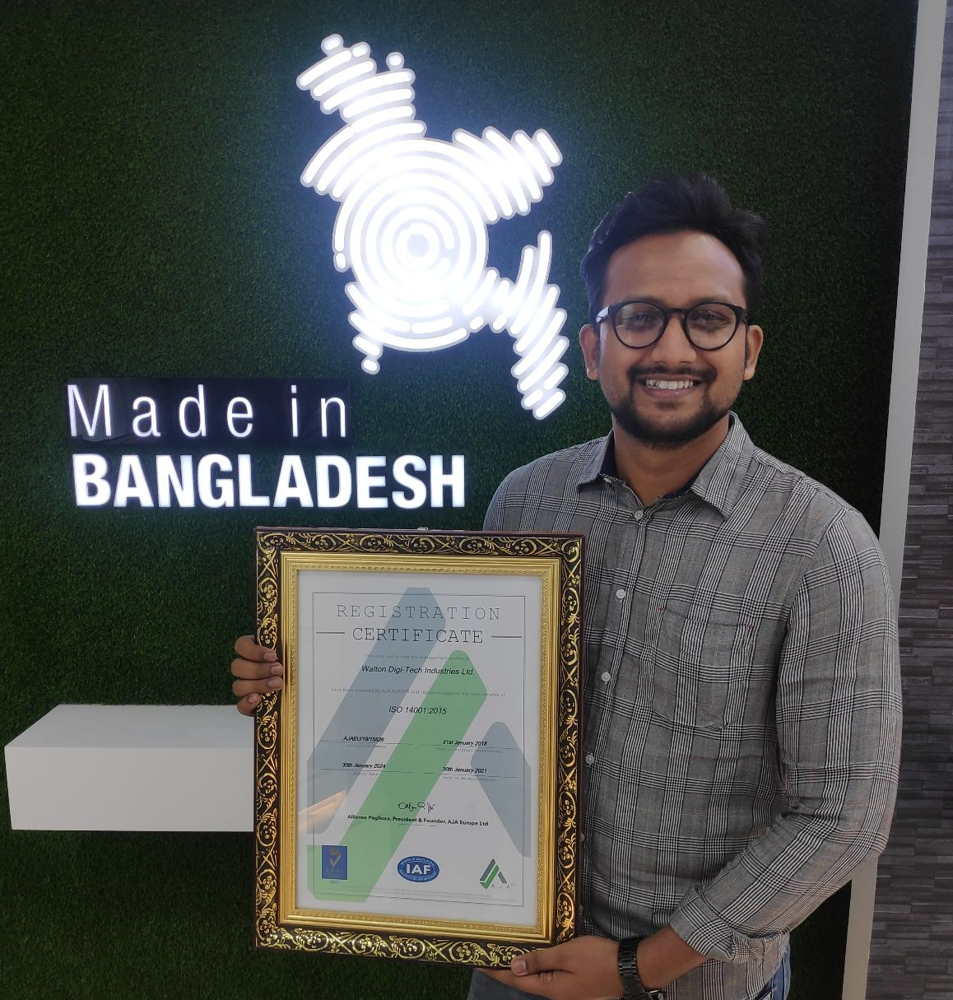

My journey into immersive technology started in the world of circuits and oscilloscopes. I trained as an Electrical Engineer at the
Chittagong University of Engineering and Technology (CUET), where I was captivated by the logic of systems and the elegance of precision engineering. But something was missing—until I encountered code that could respond, adapt, and interact.
The turning point came when I first experienced Virtual Reality. It wasn’t just the headset or visuals—it was the feeling of presence, the sense that you could think, act, and feel inside a digital world. That moment sparked a profound shift: from hardware to human-centered computing, from circuits to cognition. I realized that I wanted to design systems that didn't just work—but communicated, responded, and understood.
After graduation, I joined Walton Digi-Tech Industries Limited as a Quality Control Engineer in the Cellphone Quality Assurance Team. I gained hands-on experience in testing and validating complex products—but the deeper takeaway was how tightly technology and human perception are intertwined. That insight fueled my move into Computer Science, where interaction, data, and behavior became the core of my work.
Today, I’m a researcher and VR developer working at the intersection of Virtual Reality (VR), Human-Computer Interaction (HCI), and Data Science. My research focuses on cognitive load, motion precision, and usability in immersive environments—using Unity, Python, and machine learning to turn behavior into insight and feedback into design.
I recently completed my Master of Science in Computer Science and a Graduate Certificate in Data Science at the
University of Arkansas at Little Rock. I’m now pursuing a Ph.D. in Computer Science at the same institution, building intelligent, privacy-aware simulation systems for training, performance, and human-machine collaboration.
I believe that immersive technologies are not just tools—they are environments for learning, decision-making, and connection. My goal is to design adaptive, inclusive virtual worlds where humans and systems work in sync, turning complexity into clarity.
02 / RESEARCH & EXPLORATION
Research & Publications
My research spans Virtual Reality (VR),
Human–Computer Interaction (HCI), and
Data Science — exploring how immersive environments
can enhance human performance, accessibility, and privacy.
My work bridges empirical behavioral studies with data-driven analytics,
integrating real-time motion tracking, gaze modeling, and
privacy-preserving computation.
Conference Paper · 2025
Combined Effects of VR and Gaming Expertise on Precision Performance
AHFE 2025 — Conference Proceedings
Investigates how varying levels of experience with VR and 3D
computer games influence cognitive load and precision task
performance. Results indicate that dual-domain expertise improves
accuracy, lowers task-load perception, and enhances consistency in
immersive environments.
Evaluating Adjustment and Proficiency Disparities in Virtual Reality
IEEE VR 2025
Examines how VR and gaming expertise affect user accuracy and
cognitive load in precision-based tasks. Findings reveal that users
proficient in both domains demonstrate higher efficiency and reduced
workload, supporting adaptive VR training systems.
Gaze Insights in XR: Real-Time Eye-Tracking Analytics with Elasticsearch
GEMINI Workshop · IEEE VR 2025
Introduces a scalable framework using the Elastic Stack for
real-time gaze analytics in VR. The system supports interactive
heatmaps and replay analysis in Unity while implementing
privacy-preserving mechanisms for secure gaze data management.
Non-Linear Parameterization of Spatial Decision Making in Immersive VR
IEEE VR 2024 · Orlando
Explores how spatial decision-making and motor proficiency vary
between expert and novice VR users. Using maze-based environments
and neural network explainability (SHAP), the study identifies key
performance determinants shaping user adaptation.
Privacy Concerns from Variances in Spatial Navigability in VR
IEEE VR 2023 · Shanghai
Investigates how spatial navigation patterns in VR may expose
sensitive behavioral traits. Proposes privacy-aware machine learning
frameworks for VR and AR platforms to mitigate user profiling and
inference risks.
Affordable Electricity for Bhashan Char from Renewable Energy
IEEE ECCE 2019 · Dhaka
Designed a hybrid renewable energy system using HOMER software to
supply sustainable power to Bhashan Char, an offshore settlement for
displaced communities. Proposed system cost: 8.9 BDT/kWh.
Developed a hierarchical desktop application integrated with an SQL
database to manage library operations efficiently. Strengthened
programming and database management expertise.
Authored the section on Force in a physics book
designed to make science engaging for secondary students in
Bangladesh, emphasizing conceptual clarity and curiosity-driven
learning.
International Outdoor Robotics Competition on Humanitarian Demining
IIUM · Malaysia
Participated in the first international outdoor robotics competition
on humanitarian demining, gaining hands-on experience with
sensor-based navigation and team-based technical problem-solving.
“When something is important enough, you do it even if the odds are not in your favor.” — Elon Musk

Before becoming a Graduate Research Assistant at the Emerging Analytics Center (EAC) at the University of Arkansas at Little Rock (UALR), my professional path was defined by leadership, operational, and technical roles across both academia and industry. Each experience has shaped my expertise in management, engineering, and applied research.
Supporting a graduate-level seminar course on Operating Systems. My responsibilities include facilitating in-class discussions, evaluating student-led presentations, and assisting with grading and feedback on seminar topics. This role allows me to engage with advanced OS concepts such as kernel architecture, scheduling algorithms, virtualization, and security, while fostering critical thinking and communication among graduate peers.
Conducting interdisciplinary research in Virtual Reality (VR), immersive visualization, and machine learning. My work focuses on usability analytics, spatial decision-making, and gaze-based interaction design in XR. The EAC is a hub for innovation in immersive visualization, cybersecurity, IoT, and AI-driven applications, where I contribute to both technical and usability-focused research.
Assistant Director, Cellphone Quality Control Department
Supervised production and quality control operations in Walton’s mobile manufacturing division. Led teams ensuring process efficiency, ISO compliance, and adherence to safety standards. Collaborated with R&D and supply chain units to reduce defects, optimize workflows, and uphold product quality through Lean and Six Sigma methodologies.
Assistant Supervisor of Operations
Bashir Ahmed Co. Ltd. (Jun 2019 – Jun 2020)
Managed cargo operations and customs documentation while coordinating logistics teams for efficient shipment handling. Improved workflows by implementing compliance-driven strategies, strengthening the company’s operational performance and supply chain integrity.
Content Writer
Professional Activities Committee, IEEE Bangladesh (2018)
Authored and presented technical news and analytical summaries on advancements in engineering and technology for IEEE Bangladesh’s outreach publications. Developed accessible and engaging content that highlighted emerging innovations and contributed to public technical literacy.
Co-founder & General Secretary
Chittagong Students Forum, CUET (2018)
Established a cultural and academic platform to promote collaboration and community among students from the Chittagong region. Oversaw event organization, coordination, and community engagement initiatives that strengthened cultural representation on campus.
General Secretary
IEEE Student Branch, CUET (Sep 2017 – Sep 2018)
Led and coordinated events such as Maker Fest, Biomedical Engineering Poster Competition, and IoT & PCB Design Workshops. Oversaw branch logistics, membership, and communication with IEEE HQ, cultivating technical learning and innovation among student engineers.
04 / ACADEMIC FOUNDATIONS
Academic Journey
“True wisdom is knowing what you do not know.” — Socrates
I began my academic journey with a passion for engineering and innovation that led me from the foundations of electrical engineering to the forefront of virtual reality and data science. Each phase of my education strengthened my analytical, creative, and research capabilities.
Currently pursuing a Ph.D. in Computer Science with a focus on Virtual Reality, Human–Computer Interaction, and Data Science. My doctoral research explores immersive technologies and their applications in interactive system design, combining advanced algorithmic models with user-centric data analysis. This builds on my prior graduate work and continues to strengthen my expertise in developing innovative, data-driven, and user-focused computational experiences.
Pursued advanced research in computer science with emphasis on Virtual Reality, Human–Computer Interaction, and Data Science. This program deepens my understanding of algorithms, immersive design, and data-driven system development. I have also completed a Graduate Certificate in Data Science, which provided a strong foundation in analytics, visualization, and real-world data modeling.
Bachelor of Science in Electrical and Electronic Engineering
My undergraduate years at CUET were driven by a singular dream—to become an engineer. During this period, I cultivated a deep interest in circuits, embedded systems, and computational design. These formative years transformed my fascination with technology into a lifelong commitment to innovation and research.
Completed my Higher Secondary School Certificate (HSC) with distinction, achieving a GPA of 5.00. My focus on physics, mathematics, and computer studies provided a solid foundation for engineering education and inspired my scientific curiosity.
Achieved GPA 5.00 and received a government scholarship from the Science Group. This milestone marked the beginning of my commitment to academic excellence and established the groundwork for my future engineering studies.
05 / CONTINUOUS LEARNING
Achievements & Certifications
Professional certifications and technical training across Unity development,
data science, machine learning, deep learning, analytics, and collaborative
software development.
Unity · Game Development
Complete C# Unity Game Developer 3D
Comprehensive course on Unity and C# programming for 3D games —
covering coding principles, mechanics, and gameplay design.
Strengthened my VR development expertise.
Elasticsearch · Data Analytics
Elasticsearch Masterclass with Logstash and Kibana
Hands-on training in managing, analyzing, and visualizing large-scale
data with the ELK stack — applied for real-time analytics and data
visualization in VR research.
Artificial Intelligence · Deep Learning
Deep Learning A–Z™: Hands-On Artificial Neural Networks
Built and deployed neural networks for real-world AI applications,
gaining practical insight into deep learning architectures and
optimization strategies.
Python · Machine Learning
Machine Learning, Data Science & Deep Learning with Python
Advanced coursework on supervised and unsupervised learning,
predictive analytics, and deep learning using Python, reinforcing
data-driven approaches in immersive analytics.
DeepLearning.AI · Neural Networks
Neural Networks and Deep Learning
Developed an in-depth understanding of backpropagation, activation
functions, regularization, and neural network design, improving my
ability to integrate machine learning into behavioral modeling in VR.
NVIDIA · Deep Learning
Getting Started with Deep Learning
Hands-on NVIDIA training covering deep learning fundamentals,
frameworks, model development, and practical deployment workflows.
Git · Unity · Version Control
Get Git Smart: Learn Git in Unity, SourceTree, GitHub
Practical version control training integrating Unity projects with
Git, GitHub, and SourceTree, improving collaborative development and
project management workflows.
University of Michigan · Data Science
Introduction to Data Science in Python
Covered data wrangling, statistical analysis, data manipulation,
and visualization using Python, forming a foundation for my
data-centric research in immersive technologies.
06 / PLAY SOMETHING SMALL
Games & Experiments
Small puzzles and indie games, made for a quick break. Play in your browser. Each launch starts fresh, with no account or saved progress.
07 / START A CONVERSATION
Get in Touch
I’m always happy to connect with fellow researchers, developers, and innovators.
Whether you’d like to discuss collaboration opportunities, VR usability research, or just exchange ideas—feel free to reach out!